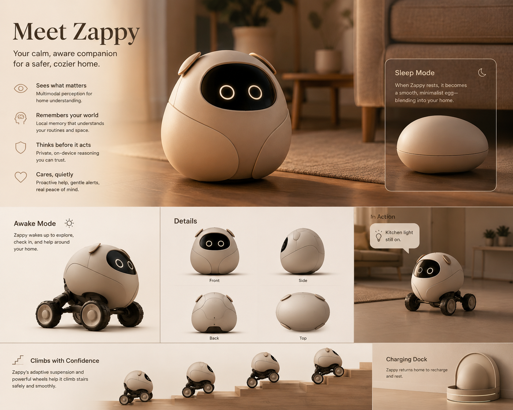
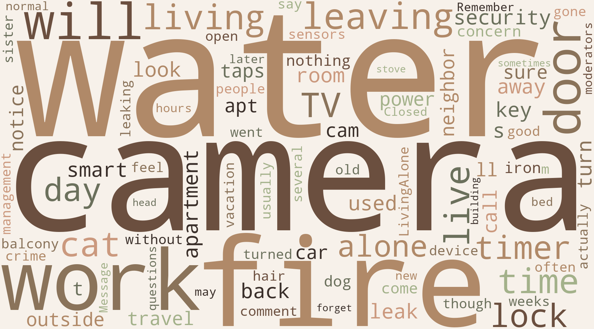

The current solution
A door camera. A living room camera. A camera for the dog's crate. Multiple devices, but still the need to constantly check.
Mobility · Presence · Privacy
Zappy is a privacy-first household awareness robot designed to reduce the mental burden of living alone. It combines mobility, quiet presence, and local AI so your home can notice what matters without becoming a surveillance system.
All data stays locally on the robot, and the app lets you control how much Zappy is allowed to know, remember, and act on.

Concept rendering · For illustration purposes only.
The story
Inspired by a real response from someone living alone. Their worry wasn't burglars. It was fire, flooding, and the pet waiting at home.
A door camera. A living room camera. A camera for the dog's crate. Multiple devices, but still the need to constantly check.
Zappy knows Sarah is away, Bella is home, and the house should be quiet.
{
"resident": "away",
"dog": "home",
"risk_focus": ["fire", "flooding"],
"expected_state": "quiet home"
}
✓ Bella resting
✓ No unusual heat
✓ No leaks detected
✓ Home quiet
Everything looks normal.
The problem
Is my cat okay while I am away?
Did I leave something on?
Did I leave a tap running?
What if the power goes out?
Did I lock up properly?
Community discovery
I collected 30+ early responses from people living alone. Their stories were not about wanting more cameras. They were about wanting reassurance.

“I just worry about my cat.”
“It is the taps I worry about.”
“I still ask my neighbour when something happens.”
Zappy to the rescue
Reads the current state of the home through local sensors and images.
Keeps track of events like who left, what changed, and when.
Compares the current state with what should normally be true.
Interrupts only when something seems unusual or worth checking.
Designed around local AI, transparent memory, and user control.
A home should not feel watched.
Developer
I am a data scientist and machine learning engineer with experience building and deploying AI products in industry. My work spans large language models, anomaly detection, time-series forecasting, and computer vision products. I have worked on production AI applications, benchmarking foundation models, and developing machine learning solutions for industrial data.
Through research and engineering, I have explored multimodal AI, local inference, retrieval systems, and agentic workflows. Zappy combines many of these interests: embodied AI, memory, multimodal reasoning, and calm technology designed around people rather than surveillance.
My goal is to build trustworthy AI systems that quietly augment everyday life, giving people peace of mind while keeping them in control of their data.